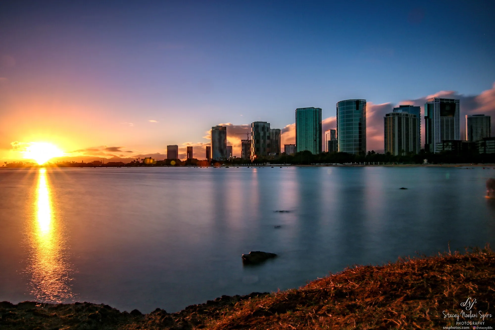

← All galleries
Landscapes & Travel
From Oʻahu’s changing skies to mountain roads in Canada, a collection of places worth pausing for.
41 selected photographs
← Back to portfolio
Magic Island at dusk1 / 41
© Stacey Noelani Spirz · For viewing only. Want to use a photograph or order a print? Please contact me.
Swipe the photographs sideways or use the arrows. Tap the large image to see it full screen.
Keep exploring